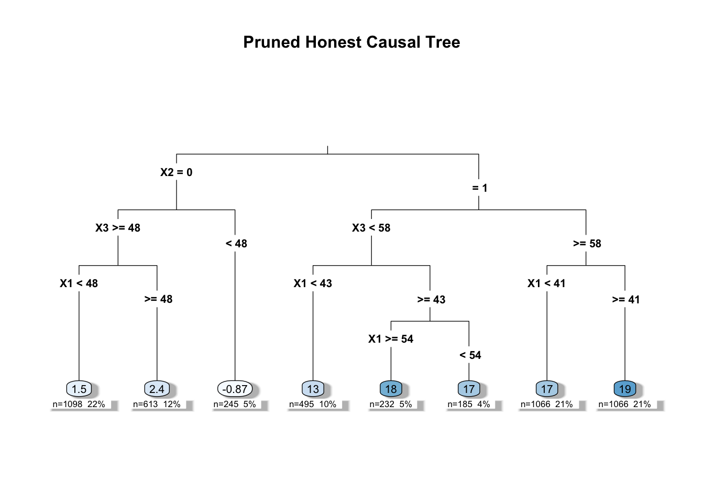
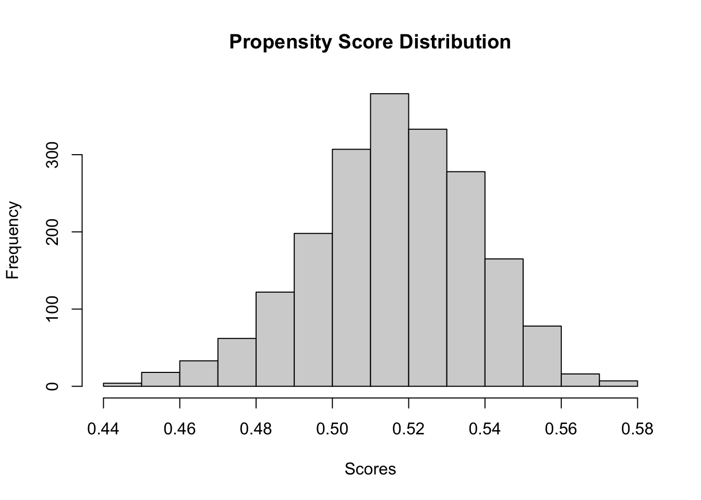
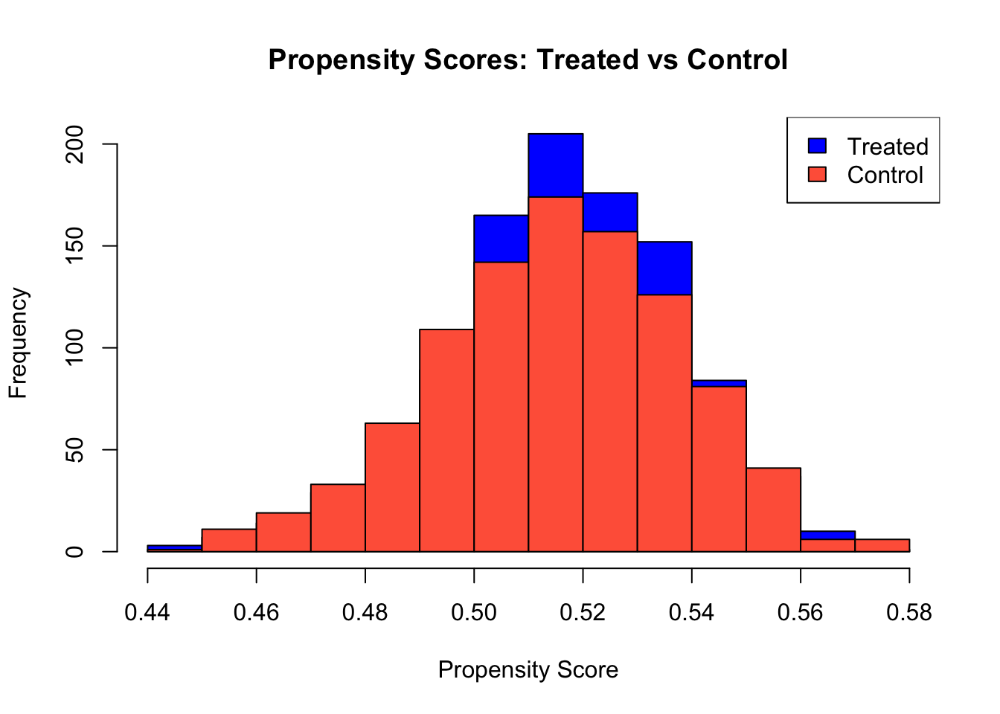
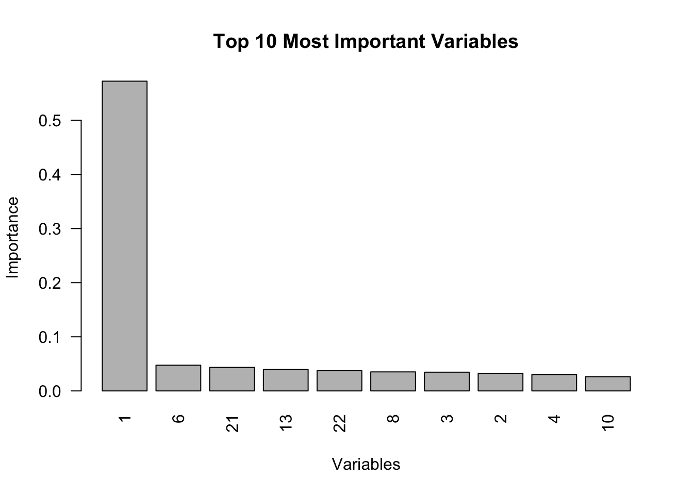
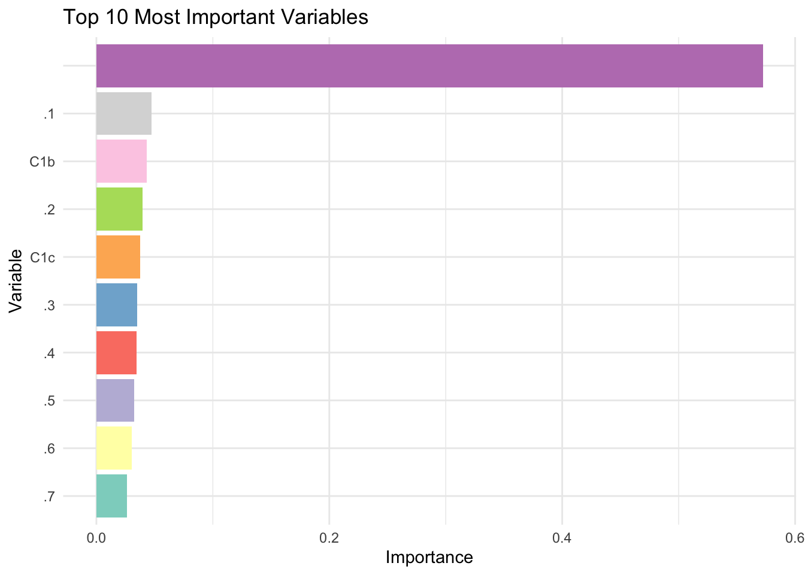
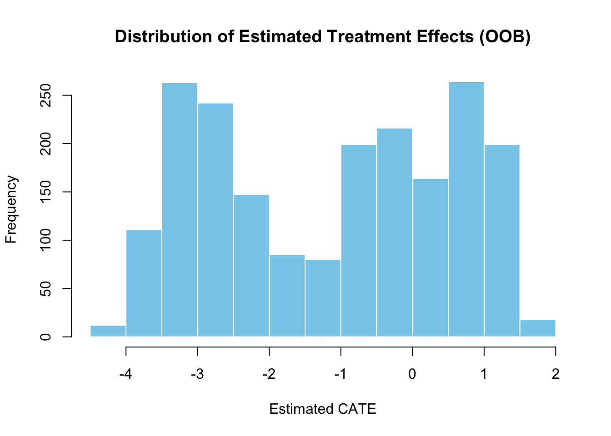
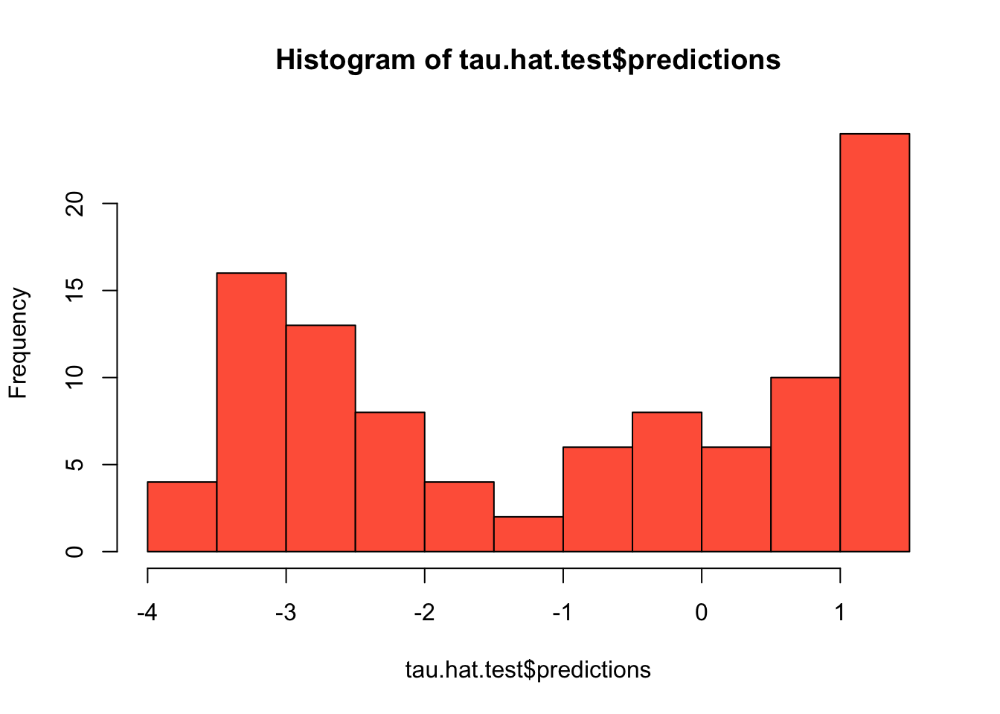
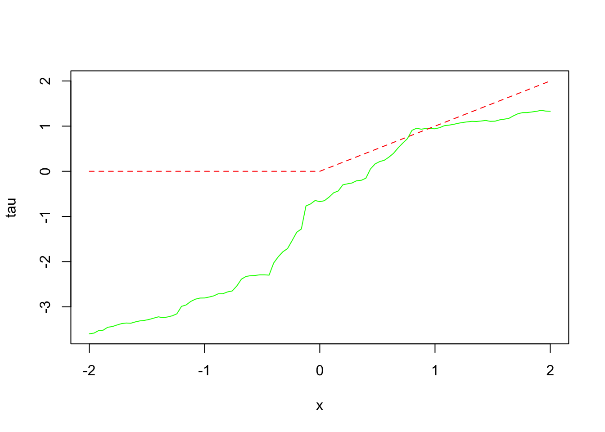
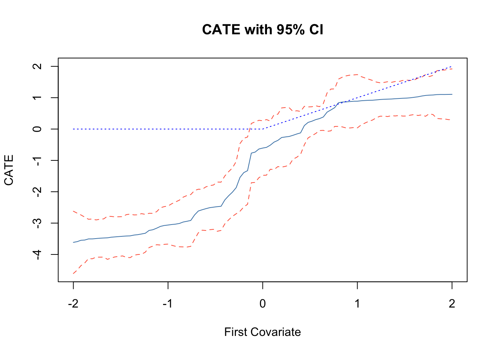
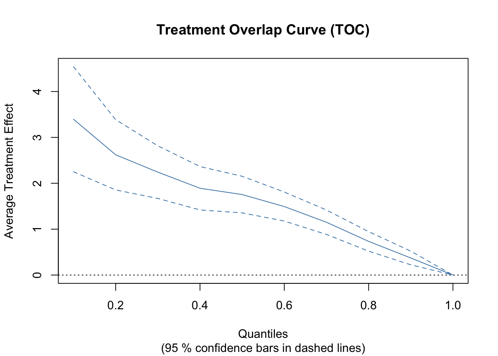

Chapter 24 Causal Trees and Forests
In the previous chapter, we introduced the idea that treatment effects may vary across individuals or subgroups, and discussed how to summarize this variation using quantities like the Group Average Treatment Effect (GATE). Let \((X_i, D_i, Y_i)\) denote the observed data, where \(X_i\) are covariates, \(D_i \in \{0, 1\}\) indicates treatment status, and the observed outcome is defined by the standard potential outcomes framework:
\[\begin{equation} Y_i = D_i Y_i(1) + (1 - D_i) Y_i(0) \end{equation}\]
The individual treatment effect, \(\tau_i = Y_i(1) - Y_i(0)\), is not directly observed, so we rely on estimation strategies to uncover average effects either for the whole population or specific subgroups. When treatment effects are heterogeneous, estimating the Group Average Treatment Effect (GATE) for subgroup \(g\), defined as
\[\begin{equation} \tau_g = \mathbb{E}[Y_i(1) - Y_i(0) \mid i \in g] \end{equation}\]
provides more targeted insights. However, identifying meaningful subgroups in advance can be challenging.
This chapter turns to methods designed to estimate such heterogeneous effects in a flexible, data-driven way. One powerful non-parametric approach is the causal tree, which uses recursive partitioning to uncover subgroups—or “leaves”—where treatment effects differ. Unlike traditional HTE methods that require researchers to define subgroup structures ahead of time, causal trees learn the structure from the data, making them especially valuable in settings where heterogeneity is complex or unknown.
As these groups are determined based on covariates \(X\), we can express the treatment effect as a Conditional Average Treatment Effect (CATE), which captures how treatment effects vary across different covariate profiles. The CATE for a covariate vector \(X = x\) is defined as:
\[\begin{equation} \tau(x) = \mathbb{E}[Y_i(1) - Y_i(0) \mid X_i = x] \end{equation}\]
Causal trees aim to estimate CATE by partitioning the covariate space into subgroups that are as homogeneous as possible in terms of treatment effects. Each “leaf” of the tree represents a subgroup of observations with similar covariate profiles, and the estimated treatment effect for each leaf can be interpreted as an approximation of CATE for that covariate region.
In practice, the CATE for a leaf \(\ell\) defined by a covariate-based partition \(\Pi\) can be estimated as:
\[\begin{equation} \hat{\tau}(\ell) = \bar{Y}_{\ell, D = 1} - \bar{Y}_{\ell, D = 0} = \frac{\sum_{i \in \ell, D_i = 1} Y_i}{n_{\ell, 1}} - \frac{\sum_{i \in \ell, D_i = 0} Y_i}{n_{\ell, 0}} \end{equation}\]
where \(D_i = 1\) indicates treatment and \(D_i = 0\) indicates control, and \(n_{\ell, 1}\) and \(n_{\ell, 0}\) are the numbers of treated and control observations in leaf \(\ell\).75
Our goal is to minimize the error in estimating \(\tau(\ell)\), which would ideally be measured by:
\[\begin{equation} \text{MSE} = \mathbb{E} \left[\sum_{\ell \in \pi} \frac{N_{\ell}}{N} (\hat{\tau}(\ell) - \tau(\ell))^2 \right] \end{equation}\]
However, since \(\tau(\ell)\) is unknown, we cannot directly compute MSE. There are various causal tree methods that address this issue, as well as estimating CATE, by incorporating different split functions, outcome adjustments, and other techniques to improve the reliability of (conditional) treatment effect estimates. We will discuss some of these methods in the following sections, but for now, we focus on the most reliable one for inference — the Honest Causal Tree (CT-H) method.
Causal trees function similarly to decision trees but are optimized to split the sample based on treatment effect heterogeneity rather than minimizing outcome prediction errors. However, standard regression trees (CART) do not provide accurate estimates of \(\tau_g\) and CATE because their objective function — minimizing mean squared error (MSE) of outcome,\(Y_i\) — is misaligned with the goal of unbiased treatment effect estimation. As we covered in Chapter 14, in CART, MSE is calculated using only outcomes \(Y\), not treatment effects — the difference in the mean of potential outcomes. This discrepancy necessitates a different or adjusted risk function that prioritizes the precision of treatment effect estimates within each leaf of the tree.
By using the adjusted empirical mean squared error (EMSE) criterion, the Honest Causal Tree method ensures that the estimated CATEs are both unbiased and stable, balancing the fit of the model with the reliability of the treatment effect estimates, and allowing us for inference.
24.1 Honest Causal Tree (CT-H) Method
An influential nonparametric approach for HTE is the causal tree method (Athey & Imbens, 2016). Causal trees adapt the idea of decision trees (like CART) to the goal of estimating heterogeneous treatment effects rather than predicting outcomes. The basic idea is to recursively partition the covariates/features into subgroups (leaves of a tree) that exhibit different treatment effects.
The causal tree algorithm works as follows: it searches for splits in covariates that maximize the difference in treatment effects between subgroups within the resulting leaves, while also ensuring each leaf has a mix of treated and control units for a valid comparison. At a high level, the splitting criterion is tailored to find maximal heterogeneity in \(\tau\) — the treatment effect. The algorithm rewards splits that create large differences in estimated treatment effects across leaves (indicating heterogeneity) and penalizes splits that lead to high variance within leaves (Athey & Imbens, 2016). In contrast to a standard regression tree that would split to reduce the estimation error of the outcome overall, a causal tree chooses splits that most improve the precision of treatment effect estimates.
A crucial innovation in causal trees by Athey & Imbens is the concept of honest estimation. The dataset is typically split into two parts: one part is used solely to decide the tree structure (i.e., to choose splits, implement cross-validation, and perform pruning), and the other is used to estimate the treatment effects within the final leaves. By separating the “training” of the tree from the “estimation” of effects, the honest causal tree avoids the problem of overfitting the treatment effect estimates to noise in the data. This approach provides more reliable treatment effect estimates for each leaf and allows for valid inference (e.g., one can calculate standard errors for the leaf-wise \(\hat{\tau}_\ell\) using only the estimation subsample).
Before discussing the algorithm, let’s define the honest criterion (risk) function. The expected mean squared error (EMSE) for treatment effect criterion in the Honest Causal Tree method is designed to minimize error in the estimation of treatment effects by incorporating both the variance of outcomes within leaves and an adjustment for the split proportions. As mentioned above, since \(\tau(\ell)\) is unknown, we cannot directly compute MSE. Instead, Athey & Imbens propose a modified version — the expected mean squared error (EMSE) — to assess the accuracy of our estimates. The EMSE criterion adjusts for both bias and variance using separate samples for training and estimation, providing a more reliable way to estimate and compare treatment effects across leaves.
The unbiased estimator of expected mean-squared error for honest causal trees (EMSE) is:
\[\begin{equation} -\widehat{\text{EMSE}}_{\tau}(S^{tr}, N^{est}, \Pi) = \frac{1}{N^{tr}} \sum_{i \in S^{tr}} \hat{\tau}^2(X_i; S^{tr}, \Pi) - \left(\frac{1}{N^{tr}} + \frac{1}{N^{est}}\right) \sum_{\ell \in \Pi} \left(\frac{S^2_{S^{tr}_{treat}}(\ell)}{p} + \frac{S^2_{S^{tr}_{control}}(\ell)}{1 - p} \right) \end{equation}\]
Where:
- \(S^{\text{tr}}\) = Training sample for tree construction.
- \(S^{\text{est}}\) = Estimation sample for estimating treatment effects.
- \(\Pi\) = Partition of the data into leaves.
- \(N^{\text{tr}}\) and \(N^{\text{est}}\) = Numbers of observations in the training and estimation samples, respectively.
- \(\hat{\tau}(X_i; S^{\text{tr}}, \Pi)\) = Estimated treatment effect for observation \(i\) based on the training sample and the partition \(\Pi\).
- \(S^2_{S^{tr}_{control}}(\ell)\): Within-leaf variances of outcomes in the control group for leaf \(\ell\).
- \(S^2_{S^{tr}_{treat}}(\ell)\): Within-leaf variances of outcomes in the treatment group for leaf \(\ell\).
- \(p\) = Proportion of treated observations.
The expected mean squared error (EMSE) estimator represents a balance between two key components: the first component is the adjusted MSE, which captures the squared treatment effect estimates across different subgroups (leaves) and reflects how well the model captures treatment effect heterogeneity. This term essentially focuses on maximizing the differences in treatment effects between leaves, encouraging splits that reveal meaningful heterogeneity. The second component is a variance term that acts as a penalty for splits leading to high variance within leaves, ensuring that the treatment effect estimates remain stable and are not driven by noise. This penalty term is particularly important as it adjusts for the variance within each leaf for both treated and control groups, making the resulting estimates more reliable.
By balancing these two components, the EMSE criterion rewards splits that create large differences in \(\hat{\tau}(\ell)\) (indicating heterogeneity in treatment effects) while penalizing splits that result in high variance within leaves, especially when the leaves contain only a small number of observations. This approach prevents overfitting and ensures that the identified subgroups have meaningful and stable treatment effect estimates.
The optimal splitting criterion (risk function) is to choose the split (only in the training data) that maximizes the reduction in estimated EMSE:
\[\begin{equation} \Delta \text{EMSE} = \text{EMSE(parent node)} - \frac{N_L}{N} \text{EMSE(left child)} - \frac{N_R}{N} \text{EMSE(right child)} \end{equation}\]
Where: \(N_L, N_R\): Numbers of observations in the left and right child nodes.
The splitting process stops when no further improvement in EMSE is possible. Similar to CART, stopping conditions are applied to prevent overfitting and to ensure reliable treatment effect estimates. As we covered in detail in that chapter, splitting stops when at least one of the following conditions is met: Minimum leaf size, which ensures that each leaf has enough observations; Maximum tree depth, which controls the complexity of the tree; and Insufficient EMSE reduction, which stops splitting if further splits do not significantly reduce EMSE.
We want to highlight a few key points. There is an adjusted version of this estimator that introduces a parameter \(\alpha\); however, in the causaltree package, \(\alpha\) is set to \(\frac{1}{2}\) by default, resulting in the same estimator unless you change the default setting.76 In cross-validation, we use the same estimator but apply it to the CV fitting set instead of the entire training set. We will provide a detailed explanation of the derivation of this estimator in a separate section at the end of the chapter. For now, let’s illustrate how this calculation works with a simple example.
Suppose we consider every possible integer value between 16 and 65 as potential split points for \(X_1\) (representing age). For each possible split \(s_1\) (e.g., 16, 17, 18, … 65), we first divide the data into left (\(X_1 \leq s_1\)) and right (\(X_1 > s_1\)) nodes, then calculate the EMSE for the parent node, as well as for the left and right child nodes. After that, we determine the optimal split \(s_1\), which is the one that maximizes the reduction in EMSE (\(\Delta \text{EMSE}\)). This exhaustive search ensures that the selected split point provides the best treatment effect heterogeneity between the left and right nodes.
Recall that for a given leaf \(\ell\), the treatment effect is estimated as:
\[\begin{equation} \hat{\tau}(\ell) = \frac{\sum_{j \in \ell} D_j Y_j}{N_{\ell, 1}} - \frac{\sum_{j \in \ell} (1 - D_j) Y_j}{N_{\ell, 0}} \end{equation}\]
In this expression, \(D_j = 1\) indicates that observation \(j\) is treated, while \(D_j = 0\) indicates that it is a control. The terms \(N_{\ell, 1}\) and \(N_{\ell, 0}\) represent the numbers of treated and control observations in leaf \(\ell\), respectively. \(Y_j\) denotes the observed outcome for observation \(j\). This formula captures the difference in average outcomes between treated and control units within the same leaf, effectively reflecting the treatment effect for that subgroup. For an observation \(i\) in leaf \(\ell\), the predicted treatment effect \(\hat{\tau}(X_i)\) is simply the calculated treatment effect \(\hat{\tau}(\ell)\) for that leaf. We will later use these individual treatment effects to calculate the treatment effect for the parent node, as it is a weighted average of the treatment effects in its child nodes.
To illustrate how the estimator works, let’s go through a step-by-step example. Suppose we have a dataset with a total of 10,000 observations, which we divide into a training sample of 6,000 observations (including 3,800 treated and 2,200 control units) and an estimation sample of 4,000 observations (with 1,800 treated and 2,200 control units). The dataset contains multiple predictors, such as \(X_1, X_2, \dots\). Our goal is to recursively split the data using an optimal splitting criterion based on the Expected Mean-Squared Error (EMSE) to maximize treatment effect heterogeneity. For all subsequent steps, including cross-validation and pruning, we will only use the training sample.
To begin, let’s consider a potential split on \(X_1\) (for example, age) at a threshold \(s_1\) of 30. Each observation \(X_i\) in the training sample is assigned to a leaf \(\ell(X_i)\) based on the current partitioning defined by the tree \(\Pi\). This split creates two child nodes: the left node (L), which includes observations with \(X_1 \leq 30\), and the right node (R), which includes observations with \(X_1 > 30\).
For this example, let’s assume that the left node contains 2,500 observations, with 1,500 treated and 1,000 control units, while the right node contains 3,500 observations, with 2,300 treated and 1,200 control units. The average outcomes for the left node are 5.5 for treated units and 3.0 for control units. Similarly, for the right node, the average outcomes are 6.0 for treated units and 4.5 for control units.
These splits allow us to examine the treatment effect heterogeneity between the subgroups more closely. By calculating the difference in average outcomes between treated and control units within each node, we can estimate the treatment effects for the left and right nodes. For the left node, the estimated treatment effect is:
\[ \hat{\tau}(L) = 5.5 - 3.0 = 2.5 \]
For the right node, it is:
\[ \hat{\tau}(R) = 6.0 - 4.5 = 1.5 \]
To further assess the quality of this split, we calculate the EMSE for each node. First, we determine the proportion of treated observations in the training sample, which is \(p = \frac{3800}{6000} = 0.633\).
We assume the following variances for the nodes: for the left node, the variance for treated observations is \(S^2_{treat}(L) = 4\) and for control observations it is \(S^2_{control}(L) = 5\). For the right node, the variance for treated observations is \(S^2_{treat}(R) = 6\) and for control observations it is \(S^2_{control}(R) = 4\).
Using these values, we calculate the EMSE for the left node as follows:
\[ -\widehat{\text{EMSE}}_{\tau}(L) = 2.5^2 - \left(\frac{1}{6000} + \frac{1}{4000}\right) \left(\frac{4}{0.633} + \frac{5}{0.367} \right) \approx 6.25 - 0.0083 = 6.2417 \]
Similarly, for the right node, the EMSE is calculated as:
\[ -\widehat{\text{EMSE}}_{\tau}(R) = 1.5^2 - \frac{1}{2400} \left(\frac{6}{0.633} + \frac{4}{0.367} \right) \approx 2.25 - 0.0085 = 2.2415 \]
Next, we compute the EMSE for the parent node before the split. To do this, we first find the average treatment effect for the parent node by taking a weighted average of the treatment effects in the child nodes:
\[ \hat{\tau} = \frac{5.5 \times 1500 + 6.0 \times 2300}{3800} - \frac{3.0 \times 1000 + 4.5 \times 1200}{2200} \approx 5.8 - 3.82 = 1.98 \]
The EMSE for the parent node is then:
\[ -\widehat{\text{EMSE}}_{\tau}(\text{parent}) = 1.98^2 = 3.92 \]
Finally, we calculate the improvement in EMSE due to the split by comparing the EMSE of the parent node with the weighted EMSEs of the child nodes:
\[ \Delta \text{EMSE} = 3.92 - \left(\frac{2500}{6000} \cdot 6.2417 + \frac{3500}{6000} \cdot 2.2415\right) \approx 0.02 \]
This positive \(\Delta \text{EMSE}\) indicates that the split increases treatment effect heterogeneity, suggesting that separating the data based on \(X_1\) is beneficial. However, if \(\Delta \text{EMSE}\) is too small or if any stopping criteria—such as minimum leaf size, maximum tree depth, or insufficient EMSE reduction—are met, the split should not be pursued.
If we proceed with the split, we apply the same process recursively to other predictors, such as \(X_2\). For \(X_2\), we would evaluate potential split points at different thresholds, calculate the EMSE improvement for each possible split, and select the split that maximizes \(\Delta \text{EMSE}\). This process continues recursively until no significant improvement in EMSE is observed or until one of the stopping criteria is met.
The key insight from this approach is that the EMSE criterion ensures splits create meaningful subgroups with distinct treatment effects. Additionally, the variance penalty in EMSE prevents the selection of splits that lead to high within-group variance, which helps maintain the reliability and stability of treatment effect estimates.
After constructing the initial tree using the training sample, the next step is to evaluate the performance of the tree and determine the optimal tree size. This process involves cross-validation to select the best tree size with pruning that balances model complexity and predictive accuracy. By using cross-validation, we can assess the generalization performance of the tree and avoid overfitting to the training data.
Lets outline the detailed steps involved in all the process honest causal tree algorithm:
24.1.1 CT-H Algorithm:
The Honest Causal Tree aims to partition data into leaves where treatment effects \(\tau(\ell)\) differ, using the following approach:
- The training sample (\(S^{tr}\)) is used to build the tree structure, perform cross-validation, and prune the tree.
- The estimation sample (\(S^{est}\)) is used only in the final step to estimate treatment effects, ensuring unbiased estimates.
- Cross-validation is applied to tune pruning parameters and avoid overfitting using only the training data.
- The -EMSE criterion is used to choose splits that maximize heterogeneity while controlling variance.
Our data consists of \((X_i, D_i, Y_i)\) for \(i = 1, \dots, N\), where:
- \(X_i\) represents covariates.
- \(D_i \in \{0, 1\}\) is the treatment indicator.
- \(Y_i\) is the observed outcome.
Step 1: Split the Data into Training and Estimation Samples
- Input: Full dataset \(D = \{(X_i, D_i, Y_i)\}_{i=1}^N\) of total size \(N\).
- Process:
- Randomly split \(D\) into two disjoint subsets:
- Training sample \(S^{tr}\) of size \(N^{tr} \approx N/2\).
- Estimation sample \(S^{est}\) of size \(N^{est} \approx N/2\).
- Ensure \(S^{tr} \cap S^{est} = \emptyset\).
- Output: Training and estimation samples:
- \(S^{tr} = \{(X_i, D_i, Y_i)\}_{i \in I^{tr}}\).
- \(S^{est} = \{(X_i, D_i, Y_i)\}_{i \in I^{est}}\).
- Intuition: The training sample is used exclusively for building, validating, and pruning the tree. The estimation sample is reserved for the final unbiased estimation of treatment effects.
Step 2: Further Split Training Data for Cross-Validation
- Input: Training sample \(S^{tr}\) of size \(N^{tr}\).
- Process:
- Divide \(S^{tr}\) into \(K = 10\) folds for cross-validation (default in causaltree).
- For each fold \(k\):
- Create a cv-fit subset \(S^{\text{cv-fit}, k}_{tr} = S^{tr} \setminus S^{k}_{tr}\).
- Create a cv-val subset \(S^{\text{cv-val}, k}_{tr} = S^{k}_{tr}\).
- Output: Pairs of cv-fit and cv-val subsets for each fold.
- Intuition: Using 10-fold cross-validation helps to tune pruning parameters by growing trees on cv-fit subsets and validating them on cv-val subsets to prevent overfitting.
Step 3: Grow the Tree on the cv-fit Subset
- Input: cv-fit subset \(S^{\text{cv-fit}, k}_{tr}\) of size \(N^{\text{cv-fit}}_{tr}\).
- Process (Recursive Partitioning):
- Start with one leaf (the entire \(S^{\text{cv-fit}, k}_{tr}\)).
- For each current leaf \(\ell\):
- Calculate statistics such as the number of units, estimated treatment effects \(\hat{\tau}(\ell)\), and within-leaf variances for treated and control groups using only the cv-fit subset.
- For each covariate \(X_j\) and potential split \(t\):
- Compute EMSE before and after the split based on the cv-fit subset.
- Evaluate gain \(\Delta\) as the difference between EMSE before and after the split.
- Choose the split that maximizes \(\Delta\) if \(\Delta > 0\) and meets the stopping criteria.
- Stopping Rules:
- Minimum leaf size: Ensure each leaf has enough treated and control units.
- Maximum tree depth: Prevents the tree from becoming overly complex.
- Insufficient EMSE reduction: Stop splitting if the reduction in EMSE is below a predefined threshold.
- Output: A full tree \(T_k\) for each fold \(k\).
- Intuition: Growing deep trees on cv-fit subsets captures all possible heterogeneity, and the -EMSE criterion ensures meaningful splits by rewarding large differences in \(\hat{\tau}\) and penalizing high variance.
Step 4: Honest Cross-Validation to Determine Pruning Parameter
- Input: Trees \(T_k\) from each fold and cv-val subsets \(S^{\text{cv-val}, k}_{tr}\).
- Process:
- Generate a sequence of subtrees by pruning splits with the smallest gain.
- Use a cost-complexity criterion to evaluate each subtree: \(C_{\alpha}(T) = -\text{EMSE}(T) - \alpha |T|\) where \(|T|\) is the number of leaves and \(\alpha\) is the complexity penalty.
- Select the optimal complexity parameter \(\alpha^*\) based on the average validation EMSE across folds.
- Output: Optimal \(\alpha^*\) for pruning.
- Intuition: Cross-validation balances model fit and complexity by selecting \(\alpha^*\) to prevent overfitting.
Step 5: Grow and Prune the Final Tree on Full Training Sample
- Input: Full training sample \(S^{tr}\) and optimal \(\alpha^*\).
- Process:
- Grow a full tree using all of \(S^{tr}\).
- Prune the tree based on \(\alpha^*\) to get a final pruned tree \(T^*\).
- Output: Pruned tree \(T^*\) with optimal partitions \(\Pi^*\).
- Intuition: Growing the tree on the full sample maximizes power, while pruning with \(\alpha^*\) prevents overfitting.
Step 6: Estimate Treatment Effects with Estimation Sample
- Input: Pruned tree \(T^*\) and estimation sample \(S^{est}\).
- Process:
- For each observation in \(S^{est}\), traverse \(T^*\) to assign it to a leaf \(\ell\).
- Compute the treatment effect for each leaf \(\ell\) using only the estimation sample:
\[\begin{equation*}
\hat{\tau}(\ell; S^{est}) = \bar{Y}_{\ell, D = 1}^{\text{est}} - \bar{Y}_{\ell, D = 0}^{\text{est}}
\end{equation*}\]
where:
- \(\bar{Y}_{\ell, D = 1}^{\text{est}} = \frac{1}{N_{\ell, 1}^{\text{est}}} \sum_{i \in \ell, D_i = 1} Y_i\) is the average outcome for treated units in leaf \(\ell\).
- \(\bar{Y}_{\ell, D = 0}^{\text{est}} = \frac{1}{N_{\ell, 0}^{\text{est}}} \sum_{i \in \ell, D_i = 0} Y_i\) is the average outcome for control units in leaf \(\ell\).
- Optional: Compute Variance for Treatment Effect Estimates
- For each leaf \(\ell\), calculate the variance for treated and control groups:
\[\begin{equation*} S_{\text{treat}}^2(\ell; S^{est}) = \frac{1}{N_{\ell, 1}^{\text{est}} - 1} \sum_{i \in \ell, D_i = 1} \left(Y_i - \bar{Y}_{\ell, D = 1}^{\text{est}}\right)^2 \end{equation*}\]
\[\begin{equation*} S_{\text{control}}^2(\ell; S^{est}) = \frac{1}{N_{\ell, 0}^{\text{est}} - 1} \sum_{i \in \ell, D_i = 0} \left(Y_i - \bar{Y}_{\ell, D = 0}^{\text{est}}\right)^2 \end{equation*}\]
- Estimate the variance of \(\hat{\tau}(\ell; S^{est})\) as:
\[\begin{equation*} \text{Var}(\hat{\tau}(\ell)) \approx \frac{S_{\text{treat}}^2(\ell)}{N_{\ell, 1}^{\text{est}}} + \frac{S_{\text{control}}^2(\ell)}{N_{\ell, 0}^{\text{est}}} \end{equation*}\]
- Output:
- Estimated treatment effects \(\hat{\tau}(\ell; S^{est})\) for each leaf \(\ell\). Each unit assigned to leaf \(\ell\) has the same the leaf-level treatment effect \(\hat{\tau}(\ell; S^{est})\).
- Optional: Variance estimates \(\text{Var}(\hat{\tau}(\ell))\) for each leaf \(\ell\).
- Intuition:
- Using only the estimation sample prevents bias in the treatment effect estimates.
- Variance estimates provides standard errors for treatment effect estimates, helping assess their reliability.
- Using only the estimation sample prevents bias in the treatment effect estimates.
Step 7: Compute ATE for the Tree - Input: Number of units in each leaf and the total. Each unit has the same leaf-level treatment effect. \(\hat{\tau}(\ell; S^{est})\)
Process:
Weight Each Leaf’s Treatment Effect by Its Sample Proportion:
- Compute the proportion of the estimation sample in each leaf:
\[\begin{equation*} w_\ell = \frac{N_\ell^{\text{est}}}{N^{\text{est}}} \end{equation*}\] where \(N_\ell^{\text{est}}\) is the number of observations in leaf \(\ell\), and \(N^{\text{est}}\) is the total number of observations in the estimation sample.
Aggregate Across Leaves to Compute ATE:
- Compute the tree-level ATE as the weighted average of leaf-level treatment effects:
\[\begin{equation*} \hat{\tau}^{\text{tree}} = \sum_{\ell} w_\ell \hat{\tau}(\ell; S^{est}) \end{equation*}\]
Output:
- Estimated ATE for the tree, summarizing the overall causal effect learned from the tree structure.
Step 8: Predict for New Data (Optional)
- Input: New observation \(X_{\text{new}}\) and pruned tree \(T^*\).
- Process:
- Traverse \(T^*\) using \(X_{\text{new}}\) to assign it to a leaf \(\ell\).
- Use \(\hat{\tau}(\ell; S^{est})\) to predict the treatment effect for \(X_{\text{new}}\).
- Output: Predicted treatment effect for the new observation.
- Intuition: The pruned tree generalizes to new data using honest estimates.
24.1.2 Simulation: Honest Causal Tree
In this example, we first generate a synthetic dataset of 10,000 observations with meaningful covariates: age (X1) uniformly sampled between 16 and 65, college graduation status (X2) as a binary indicator, and parent income (X3) uniformly distributed between 40 and 100 (in thousands). The treatment indicator (D) represents whether a student received a scholarship, and the outcome (Y) is defined in thousands of dollars as income, with values constrained between 50 and 150. Heterogeneous treatment effects are introduced so that older individuals, college graduates, and those with higher parental income receive a larger boost in income if treated.
Next, we split the data into training and estimation samples, ensuring that each half contains a balanced mix of treated and control observations. This split is critical for honest estimation: the training data is used to build the tree, while the estimation data is reserved for calculating unbiased treatment effects within each subgroup.
We then fit an honest causal tree using the honest.causalTree function, specifying options such as the causal tree splitting rule, honest splitting and cross-validation, and restrictions on tree depth and minimum leaf size. Cross-validation (with 10 folds) is used to tune the model and determine the optimal complexity parameter. For a comprehensive guide to all options and parameters available in causalTree, you can visit the official GitHub repository (https://github.com/susanathey/causalTree). Finally, we prune the tree based on these results and visualize it using rpart.plot, which provides clear node labels, conditional treatment effect estimates, and counts of observations per leaf.
# install.packages("devtools")
# devtools::install_github('susanathey/causalTree')
library(causalTree)
library(rpart.plot)
# Set a seed for reproducibility
set.seed(42)
# Generate synthetic data
N <- 10000 # Sample size
X1 <- sample(16:65, N, replace = TRUE) # Age between 16 and 65
X2 <- rbinom(N, 1, 0.6) # College graduation (1 = graduated, 0 = not graduated)
X3 <- runif(N, 40, 100) # Parent income in thousands (between 40k and 100k)
D <- rbinom(N, 1, 0.5) # Treatment indicator (0 = no , 1 = received scholarship)
# Define treatment effect heterogeneity based on covariates
tau <- 2 * (X1 > 40) + 15 * (X2 == 1) + 2 * (X3 > 60)
# Define income (Y) in thousands with heterogeneity and add noise
Y0 <- 5 + 1 * X1 + 5 * X2 + 0.3 * X3 + rnorm(N, 0, 5) # Control outcome
Y1 <- Y0 + tau # Treated outcome (with scholarship)
Y <- ifelse(D == 1, Y1, Y0) # Observed outcome
# Ensure income is within 50k to 150k
Y <- pmin(pmax(Y, 50), 150)
# Combine data into a data frame
data <- data.frame(Y, D, X1, X2, X3)
# Split data into treatment and control indices
n <- nrow(data)
trIdx <- which(data$D == 1)
conIdx <- which(data$D == 0)
# Create training and estimation samples (similar to the example)
train_idx <- c(sample(trIdx, length(trIdx) / 2),
sample(conIdx, length(conIdx) / 2))
train_data <- data[train_idx, ]
est_data <- data[-train_idx, ]
# Fit an honest causal tree
honestTree <- honest.causalTree(
formula = Y ~ X1 + X2 + X3,
data = train_data,
treatment = train_data$D,
est_data = est_data,
est_treatment = est_data$D,
split.Rule = "CT", # Causal tree splitting rule
split.Honest = TRUE, # Honest splitting
HonestSampleSize = nrow(est_data), # Honest sample size
split.Bucket = TRUE, # Use bucket splits for categorical variables
xval = 10, # 10-fold cross-validation
cv.option = "CT", # Use cross-validation for pruning
cv.Honest = TRUE, # ENable honest cross-validation
cv.alpha = 0.5, # Alpha parameter for honest cross-validation
minsize = 100, # Minimum leaf size
maxdepth = 5, # Maximum tree depth
cp = 0.0, # Complexity parameter for pruning
propensity = NULL # No propensity score provided
)## [1] 6
## [1] "CTD"# honestTree$cptable # Display the complexity parameter table
# Prune the tree based on cross-validation results
opcp <- honestTree$cptable[,1][which.min(honestTree$cptable[,4])]
pruned_tree <- prune(honestTree, cp = opcp)
# pruned_tree$cptable # Display the pruned tree complexity parameter table
# Plot the pruned tree using rpart.plot for better visualization
rpart.plot(pruned_tree,
type = 3, # Shows split labels and leaf nodes with outcomes
extra = 101, # Displays fitted treatment effect in each node
under = TRUE, # Show the number of observations under each node
faclen = 0, # No abbreviation for factor levels
box.palette = "Blues", # Color scheme for nodes
shadow.col = "gray", # Shadow effect for better readability
main = "Pruned Honest Causal Tree")
# Summary of the pruned tree
# summary(pruned_tree)
# Generate predicted treatment effects for the estimation sample
predictions <- predict(pruned_tree, newdata = est_data)
# Calculate the average treatment effect (ATE)
ATE <- mean(predictions)
print(ATE)## [1] 11.0031924.1.3 “Causal” Random Forests: Ensemble Methods for HTE and Inference
Causal random forests build on causal trees by averaging many trees to create a more robust nonparametric estimator of \(\tau(x)\) (Wager & Athey, 2018). This approach is analogous to how random forests extend CART: by aggregating over many randomized trees, one reduces overfitting and improves predictive stability. Yet, in causal trees and forests, the goal is not just to predict outcomes, but to estimate treatment effects, their heterogeneity, and to provide valid statistical inference.
As we discussed in Chapter 15, fitting a regression forest involves creating multiple decision trees, each trained on a different random subset of the data. For any given point \(Y_i\), the prediction of the forest is the average of the predictions made by these individual trees. Unlike the causal tree methods that require cross-validation for model selection, random forests have a built-in mechanism for performance evaluation using out-of-bag (OOB) samples. Since each tree is trained on only part of the data, the observations excluded from the training set (the OOB samples) can be used to test that accuracy of the tree. The OOB error, calculated by averaging the prediction errors for these OOB samples across all trees, provides an internal estimate of the performance of the model without the need for separate cross-validation. So, in causal forests, the OOB error can be used to assess the predictive accuracy of the model, eliminating the need for cross-validation.
The single causal tree approach by Athey and Imbens (2016) estimates heterogeneous treatment effects for each leaf of the “best” tree. Causal forests retain the flexibility of trees—capturing complex interactions and nonlinear heterogeneity—while dramatically improving precision by averaging many “reasonable” trees, which smooths out the jagged partitioning of any single tree and produces a more stable \(\hat{\tau}(x)\) function. This approach avoids the challenge of choosing a single “best” tree, as Breiman (2001) suggested, by building many reasonable trees and averaging their predictions to reduce variance and sharp decision boundaries. The causal random forest algorithm, proposed by Wager and Athey (2018), not only yields more precise treatment effect estimates but also facilitates statistical inference; under regularity conditions such as honesty and appropriate subsampling, the forest estimator for \(\tau(x)\) is asymptotically Gaussian. This means that, in addition to point estimates, standard errors and confidence intervals can be derived—often automatically in implementations like the grf package in R—allowing researchers to assess the statistical significance of heterogeneous effects.
The “causal” random forest algorithm builds on the algorithm enforces honesty by using separate subsamples for determining splits and for estimating treatment effects within leaves, preventing overfitting to the training data. Then, the ensemble averaging step combines the estimated of (conditional) treatment effect of many trees by averaging them, leading to a more stable and precise estimate of the treatment effect function \(\tau(x)\). All steps are similar to the regular forest discussed in Chapter 15, with the honesty idea introduced earlier in the causal tree section.
Formally, for a forest with \(B\) trees, the Conditional Average Treatment Effect (CATE) at a given point \(x\) is estimated as:
\[\begin{equation} \hat{\tau}_{\text{CF}}(x) = \frac{1}{B} \sum_{b=1}^{B} \hat{\tau}^{(b)}(x) \end{equation}\]
where \(\hat{\tau}^{(b)}(x)\) is the treatment effect predicted by the \(b\)-th tree for an observation with features \(x\) (obtained similar way we discussed in the previous section). This ensemble approach reduces variance and yields a more reliable estimate of \(\tau(x)\) than any single tree could provide.
Wager and Athey (2018) introduced two procedures for directly estimating heterogeneous treatment effects using causal forests. The first, known as double-sample trees (DST), builds honest trees by using separate samples for training and estimation—similar to the causal tree method we discussed earlier, but without the need for cross-validation since out-of-bag error is available. The second procedure, propensity trees (PT), uses a propensity score calculated on the full sample to guide splits via a Gini criterion (as covered in Chapters 14 and 15) and then estimates heterogeneous treatment effects. They also provide finite-sample results using k-nearest neighbors. Although forest-based methods have proven effective for treatment effect estimation in terms of predictive error—as seen with BART methods—we focus on the clear framework and simulations provided by Wager and Athey (2018), which directly estimate treatment effects. We will not include simulations or code for these specific methods here, because a newer, high-performance implementation called Generalized Random Forests (GRF) will be discussed in the next section. This overview highlights the evolution of methods for directly estimating treatment effects and sets the stage for the GRF approach, for which we will provide code and simulations.
24.2 Generalized Random Forests (GRF)
Athey, Tibshirani, and Wager (2019) introduced the Generalized Random Forest (GRF) algorithm, which extends the causal random forest framework to handle a broader range of causal inference models for estimating heterogeneous treatment effects. The GRF algorithm can estimate the average treatment effect (ATE), the conditional average treatment effect (CATE), the conditional average treatment effect on the treated (CATT), the conditional average treatment effect on the untreated (CATU), and overlap-weighted average treatment effects. Additionally, it is capable of estimating these effects in partial linear models, for binary treatments, multiple treatment categories (referred to as multi-arm causal forests), instrumental variables, quantile effects, and survival models.
The GRF algorithm is implemented in the grf package in R, which serves as a comprehensive and efficient tool for estimating treatment effects and conducting inference across various causal inference settings. The package offers a range of functionalities, including hypothesis testing and inference for treatment effect estimates for any specified sample, “predictions” of CATE at unit level, variable importance measures, and diagnostics for before-and-after analyses. The package is regularly updated with new features and improvements by a team of developers and contributors. They also maintain a detailed and user-friendly web page at https://grf-labs.github.io/grf/index.html, which we highly recommend for further details and practical examples.
In this section, we will focus on the basic idea of the Generalized Random Forest for causal forest model, its algorithm, and how to use the grf package in R to estimate treatment effects. We will cover the doubly robust method for estimating ATE, building on the concepts discussed earlier. Before proceeding, we recommend revisiting the concepts of doubly robust methods—such as the augmented inverse probability weighting (AIPW), orthogonalization, and partial linear models—to better understand the material.
Furthermore, we suggest reading the original paper by Nie and Wager (2021), which introduces the R-learners (residual learners) approach for estimating heterogeneous treatment effects. Our explanation will primarily be based on this paper and the GRF package web page and documentation. Interestingly, the GRF web page, also explains the Generalized Random Forest (especially causal forest) method using the R-learner approach, as it offers a more accessible and less notation-heavy explanation compared to the main paper. This alignment in explanation makes it easier for practitioners to understand and implement the method using the GRF package.
Before proceeding to the main idea behind the Generalized Random Forest (GRF) method, let’s briefly recap what we covered in the causal/treatment effect chapters. We observed outcomes \(Y_i\), a binary treatment \(W_i\), and covariates \(X_i\) (we changed the notation from \(D\) to align with the grf package). Our primary interest was in estimating the ATE:
\[\begin{equation} \tau = \mathbb{E}[Y_i(1) - Y_i(0)] \end{equation}\]
To estimate \(\tau\) without assuming a linear model, we used the partially linear model:
\[\begin{equation} Y_i = \tau W_i + f(X_i) + \epsilon_i, \quad \mathbb{E}[\epsilon_i \mid X_i, W_i] = 0 \end{equation}\]
By defining the propensity score \(e(x) = \mathbb{E}[W_i \mid X_i = x]\) and the conditional mean outcome \(m(x) = \mathbb{E}[Y_i \mid X_i = x] = f(x) + \tau e(x)\), we rewrote the model as:
\[\begin{equation} Y_i - m(x) = \tau (W_i - e(x)) + \epsilon_i \end{equation}\]
This formulation allowed us to estimate \(\tau\) using residual-on-residual regression:
\[\begin{equation} \tilde{Y}_i = Y_i - \hat{m}(X_i), \quad \tilde{W}_i = W_i - \hat{e}(X_i) \end{equation}\]
and then regress:
\[\begin{equation} \tilde{Y}_i \sim \tau \tilde{W}_i \end{equation}\]
(this can be written as \(\text{lm}(\tilde{Y} \sim \tilde{W})\)) in R. Also, for continuous \(W\), we can estimate \(\tau\) with partial linear model as:
\(\hat{\tau} = \frac{\sum_i \tilde{Y}_i \tilde{W}_i}{\sum_i \tilde{W}_i^2}\). We can also estimate the constant ATE using one of the nonparametric models, the augmented inverse probability weighting (AIPW) method; for details, check the Doubly Robust chapter and footnote.77 (Keep in mind that we covered numerous nonparametric and parametric methods to estimate the constant ATE, but here we emphasize AIPW as it is used in grf.) However, assuming a constant \(\tau\) is restrictive. To allow for non-constant treatment effects, we extended the model to:
\[\begin{equation} Y_i = \tau(X_i) W_i + f(X_i) + \epsilon_i \end{equation}\]
where \(\tau(X_i)\) represents the CATE. In the previous chapter, we estimated HTE using parametric models with pre-specified subgroups and explored Causal Trees upto now in this chapter. The key innovation of causal trees is to replace the standard mean-squared error of outcome splitting criterion with one that focuses on directly maximizing treatment effect heterogeneity and minimizing error in treatment effect estimates while using “honest” samples.
The Generalized Random Forest (GRF) extends this idea further by providing a flexible, nonparametric model for estimating conditional average treatment effects allowing for heterogeneous treatment effects (HTE). The Causal Forest method can be understood as a combination of ideas from Breiman’s Random Forests (2001) and Robinson’s partially linear model (1988), and Nie and Wager’s R-learner model (2021). The key innovation lies in modifying the tree-building phase, allowing heterogeneous treatment effects even at the unit level, and in the estimation phase, which captures and estimates various treatment effects and valid inferences nonparametrically for any specified sample by enabling the use of different random forest models.
In the building phase, Generalized Random Forest models create trees by selecting covariate splits that maximize the squared difference in subgroup treatment effects. The model specific criterion ensures that the splits focus on maximizing heterogeneity in treatment effects rather than just outcome variance. Each model such as causal forest, multi-outcome, survival forest implement different criterion and its approximate calculation (using gradient tree). For instance, “theoretical” splitting criterion for causal forests is \(\Delta(C_1, C_2) = \frac{n_{C_1} \cdot n_{C_2}}{n_P^2} \cdot (\hat{\tau}_{C_1} - \hat{\tau}_{C_2})^2\). We will discuss its implementation and the use of an approximate criterion instead of the theoretical one in the next section, focusing primarily on causal forests for clarity.
Once the trees are built, causal forests employ an adaptive weighting scheme: weights \(\alpha_i(x)\) are determined based on how often an observation falls into the same leaf as the target point \(x\) across all trees. The adaptive weights are defined as:
\[\begin{equation} \alpha_i(x) = \frac{1}{B} \sum_{b=1}^B \frac{\mathbb{I}(X_i \text{ is in the same leaf as } x \text{ in tree } b)}{\text{L}} \end{equation}\]
where \(L\) is the number of observations in the leaf which contains x. These weights are used to run a “forest”-localized version of Robinson’s residual-on-residual regression, allowing for flexible and localized estimation of treatment effects. The estimation of the Conditional Average Treatment Effect (CATE) \(\tau(x)\) at unit level is done using these weights:
\[\begin{equation} \tau(x) = \text{lm}(Y_i - \hat{m}^{(-i)}(X_i) \sim W_i - \hat{e}^{(-i)}(X_i), \text{weights} = \alpha_i(x)) \quad \text{where}\quad X_i \in \mathcal{N}(x) \end{equation}\]
where \(\hat{m}^{(-i)}(X_i)\) is the estimated conditional mean outcome, \(Y_i\), without using the \(i\)-th observation; and \(\hat{e}^{(-i)}(X_i)\) is the estimated propensity score without using the \(i\)-th observation. These leave-one-out estimates are part of the honesty design, ensuring unbiasedness by not reusing the same data point for both fitting and prediction. This approach essentially runs a localized out-of-bag residual-on-residual regression weighted by the forest’s structure (in other words regress the centered outcomes on the centered treatment indicator using weights which can be understood as data-adaptive kernel using only neighbour observations ), allowing for a nonparametric estimation of (unit level) treatment effects, effectively “predicting” unit level CATE.
Unlike the honest tree and causal forest discussed in the previous section—where the CATE estimator at the unit level was the mean difference in average outcomes between treatment and control groups within each leaf (and thus the same for all units in that leaf)—the Causal Forest in GRF uses an R-learner estimator with adaptive weights and out-of-bag residuals, estimating CATE using all units in the same neighborhood. The unit level estimated treatment effect at a given point \(x\) is “predicted” as:
\[\begin{equation} \hat{\tau}(x) = \frac{\sum_{i=1}^{n} \alpha_i(x) \left(Y_i - \hat{m}^{(-i)}(X_i)\right) \left(W_i - \hat{e}^{(-i)}(X_i)\right)}{\sum_{i=1}^{n} \alpha_i(x) \left(W_i - \hat{e}^{(-i)}(X_i)\right)^2} \label{eq:tau_grf_predicted} \end{equation}\]
where \(\alpha_i(x)\) represents the adaptive weights. The term \(Y_i - \hat{m}^{(-i)}(X_i)\) is the out-of-bag residual for the outcome, with \(\hat{m}^{(-i)}(X_i)\) being the predicted outcome excluding observation \(i\). Similarly, \(W_i - \hat{e}^{(-i)}(X_i)\) is the out-of-bag residual for the treatment, using a leave-one-out approach.
In practice, estimating (C)ATE requires identifying neighborhoods of \(x\), which are not known in advance, computing adaptive weights \(\alpha_i(x)\) for each point in a sample, and then calculating a weighted average of treatment effects. However, since adaptive weights are computed using a model-specific split function, the process requires thousands of trees and involves a repetitive procedure of calculating weights and then estimating treatment effects, making it computationally expensive. To improve efficiency, the GRF algorithm employs an approximate splitting criterion and a gradient tree approach. It also precomputes certain statistics during tree building, which are then used to estimate CATE directly, rather than computing \(\alpha_i(x)\) for each unit and applying the \(\hat{\tau}\) equation explicitly. We will discuss this process in detail in the algorithm section and its derivation in a separate section later.
The result of causal forest is \(\hat{\tau}\), which can be more accurately written as \(\hat{\tau}^{(-i)}(X_i)\), representing the initial treatment effect estimate for each observation. Note that this differs from the tree and forest models discussed earlier. The grf package automatically computes adaptive weights, pseudo-outcomes, and other necessary statistics for various causal forest methods. The final point prediction of treatment effects is obtained using the predict(<causal_forest>) command.
After obtaining the point prediction of treatment effect, the final average treatment effect estimate for a given sample is calculated using the doubly robust (AIPW) method. The doubly robust method combines the predictions ( unit level treatment effects) from the causal forest with the propensity score to ensure unbiasedness and efficiency in treatment effect estimation in specified sample. The sample can be new test sample, out-of-bag sample, treated sample or any other sample), the final average treatment effect estimate for that specified sample is calculated using doubly robust (AIPW) method.78 This process enable the estimation of various treatment effects, valid inference, treatment effect prediction, and other pre- and post-estimation assessments. To get the doubly robust estimates of average treatment effects with the grf package, we use just average_treatment_effect() command, which returns the estimated ATE for specified sample and standard error.
In essence, Causal Forest extends estimating CATE allowing heterogeneous treatment effects nonparametrically by integrating machine learning (adaptive trees and random forests) with econometrics (“leave-one-out residuals”-on-“leave-one-out residuals” doubly robust regression). Beyond CATE, the GRF framework can estimate other parameters. It can handle quantile estimation by modifying the splitting criteria to focus on quantiles rather than means. It can also be adapted to estimate LATE in instrumental variables (IV) settings by incorporating specialized splitting and estimation rules. Additionally, GRF extends to survival analysis by adjusting the splitting criteria for censored data, demonstrating its flexibility across a wide range of econometric applications.
24.2.1 GRF Algorithm:
Step 1. The Data Setup
You start with a dataset containing:
Covariates \(X_i\): Variables for each unit \(i\).
Outcome \(Y_i\): Outcome for each unit \(i\).
Treatment \(W_i\): A binary treatment indicator (0 = control, 1 = treated); or continuous.
Cleaning: The user must preprocess the data (e.g., handle missing values, encode variables) to make it usable before passing it to
causal_forest.
## Load necessary libraries
library(grf)
## Load your data
# For example, reading a CSV file
data <- read.csv("your_data.csv")
## Examine the data
str(data) # Check structure and types of variables
summary(data) # Get summary statistics to identify missing values or anomalies
# Convert categorical variables to dummy/binary indicators if needed
data$category_var <- as.factor(data$category_var)
data <- model.matrix(~ . - 1, data = data) # One-hot encoding without intercept
## Define features, outcome, and treatment
X <- as.matrix(data[, !colnames(data) %in% c("Y", "W")]) # Features
Y <- data$Y # Continuous outcome variable
W <- data$W # Binary treatment variable
## Check covariate balance
# Standardize features for balance checking
X_standardized <- scale(X)
summary(X_standardized)
## Ensure data is ready for causal_forest
# Confirm binary treatment and continuous outcome
table(W)
summary(Y)Optional Predictions: \(\hat{m}(X_i)\) and \(\hat{e}(X_i)\)
GRF can incorporate preliminary predictions to improve accuracy (these are also used in “doubly robust” part):
\(\hat{m}(X_i)\): Predicted outcome for individual \(i\), often estimated using a separate regression forest on \((X, Y)\).
\(\hat{e}(X_i)\): Predicted probability of treatment (propensity score), estimated from \((X, W)\) using another regression forest or any other predictive model.
For external computation and overlap testing, you can calculate these predictions before running GRF. If omitted, GRF will estimate regression forest as default using all covariates internally.
# Example of external estimation (optional)
w.forest <- regression_forest(X, W) # can use any other methods
w.hat <- predict(w.forest)$predictions
y.forest <- regression_forest(X, Y) # Outcome regression,can use any other methods
y.hat <- predict(y.forest)$predictions
# Pass externally calculated w.hat and y.hat to GRF:
cf <- causal_forest(X, Y, W, W.hat = w.hat, Y.hat = y.hat)
# If the propensity scores are well-distributed, the histogram will show most values
# away from 0 and 1. However, if the scores cluster at the extremes, the overlap
# assumption is likely violated.
hist(W.hat, main = "Propensity Score Distribution",
xlab = "Scores") # Check overlap assumption
hist(W.hat[W==1], col="gray", alpha=0.5,
main="Propensity Scores: Treated vs Control", xlab="Propensity Score")
hist(W.hat[W==0], col="black", alpha=0.5, add=TRUE)
legend("topright", legend=c("Treated","Control"), fill=c("grey","black"))Step 2: Initialize Forest Parameters
Before building the causal forest ( or other forest models. ), GRF requires tuning parameters, which control subsampling, tree size, and splitting behavior. These are set in the grf package:
num.trees: Number of trees \(B\) in the forest (default = 2000 in grf).
sample.fraction: Fraction of data subsampled for each tree (default = 0.5). Subsamples are drawn without replacement.
mtry: Number of features considered at each split (default = min(ceiling(sqrt(p) + 20), p), where \(p\) is the number of features).
min.node.size: Minimum number of observations per leaf (default = 5), controlling tree depth.
honesty: Whether to use honest splitting (default = TRUE), splitting the subsample into two parts for structure and estimation.
# Building a causal forest with default options
forest <- causal_forest( # Fit a causal forest
X, Y, W, # Features, outcome, and treatment
num.trees = 2000, # Default number of trees
min.node.size = 5, # Default minimum node size
sample.fraction = 0.5, # Default fraction of data per tree
mtry = floor(sqrt(ncol(X))), # Default number of covariates per split
honesty = TRUE, # Default to use honest estimation
honesty.fraction = 0.5, # Default fraction for honest estimation
honesty.prune.leaves = TRUE, # Default to prune leaves
W.hat = NULL, # Default to estimate propensity scores internally
Y.hat = NULL, # Default to estimate outcome model internally
alpha = 0.05, # Default confidence interval level
imbalance.penalty = 0, # Default to no penalty for imbalance
ci.group.size = 2, # Default trees averaged for confidence intervals
tune.parameters = "none" # Default to no parameter tuning
)Step 3: Building Each Tree (\(b = 1\) to \(B\))
A GRF consists of \(B\) trees (e.g., \(B = 2000\)), where each tree is built on a random subsample of the data. Then for Each tree, grf randomly divides this subsample for tree \(b\) into two evenly- sized, nonoverlapping halves:
\(S_b^{\text{split}}\): Used to determine the tree’s structure (splitting rules).
\(S_b^{\text{est}}\): Used to estimate treatment effects within the leaves.
Step 3A: Building the Tree: Splitting Nodes
The “theoretical” splitting criterion for causal forests directly targets treatment effect heterogeneity but is computationally expensive due to repeated estimation. The gradient tree approach replaces this with an efficient approximation, using pseudo-outcomes,\(\rho_i= (\hat{W}_i-\bar{W}_P)\Bigl(\hat{Y}_i - \bar{Y}_P - (\hat{W}_i - \bar{W}_P)\hat{\beta}_P\Bigr)/Var(\hat{W}_i)\), and the approximate criterion \(\hat{\Delta}(C_1, C_2) = \sum_{j=1}^2 \frac{1}{n_{C_j}} \left( \sum_{i \in C_j} \rho_i \right)^2\), allowing causal forests to scale to large datasets while preserving accuracy.79
During tree construction (see Algorithm 2, step 5; Athey, S., Tibshirani, J., & Wager, S. (2019)), these pseudo-outcomes \(\rho_i\) are used in the regression step (equation (9)) to choose splits that maximize differences in the treatment effect estimates between child nodes using standard CART regression split algorithm (which we covered in chapter 13. This approach directly targets heterogeneity by using a gradient-based approximation to the change in the target parameter when a split is made. - Start with the full dataset as the root node.
- Compute pseudo-outcomes \(\rho_i\) for all observations in the parent node one time only.
- For each feature and split point, calculate \(\hat{\Delta}(C_1, C_2)\) using the pseudo-outcomes. (That is performing a standard CART regression split on the pseudo-outcomes, not on the original outcomes)
- Choose the split that maximizes \(\hat{\Delta}(C_1, C_2)\). (This is splitting parent node into two splits that maximizes the approximate criterion for causal forests)
- Recursively apply this process to child nodes until stopping criteria (e.g., minimum node size) are met.
Repeat step 3A for all \(B\) trees. grf does not store the value of the criterion it uses to determine splits.
Step 3B: Compute weights, sufficient statistics for Each Unit
For a specific tree \(b\), once the tree structure is built using \(S_b^{\text{split}}\), the next step is to assign points from the estimation sample \(S_b^{\text{est}}\) to specific leaves of that tree. Each point \(i\) in \(S_b^{\text{est}}\) is dropped (“pushed down”) the tree according to the splitting rules until it reaches a particular leaf \(l\). Each leaf contains training examples that fell into it during tree construction, forming the “neighborhood” of \(x\) in that tree.
This process is repeated for all \(B\) trees. Using this information, the program creates a list of neighboring training points for \(x\), assigning adaptive weights denoted as \(\alpha_i(x)\). program also calculates sufficient statistics for each leaf, which are used to estimate treatment effects efficiently. There are some other information such as variable splits, out-of-bag information is saved by the program. Yet, causal forest command in grf package does not print these information directly. You can check variable importance using get_variable_importance() in the grf package. If you want to estimate ATE for causal forest (or other forest models) by AIPW, you can continue next steps.
Step 4: “Predict” Point Treatment Effects for Each Unit
When using the predict(<causal_forest>) command, the program estimates the treatment effect at a specific point \(x\) in the sample using one of two equations. The output of predict(<causal_forest>) is the unit level CATE. The more efficient second method is used for causal forests. The program decides which strategy to use based on the forest type internally.
Normally, a prediction is then made using this weighted list of neighbors, following the appropriate method for the type of forest. For instance, the best linear predictor for causal forest in the neighborhood, weighted by \(\alpha_i(x)\), is given by:
\[\begin{equation} \hat{\tau}(x) = \frac{\sum_{i=1}^n \alpha_i(x) \tilde{Y}_i \tilde{W}_i}{\sum_{i=1}^n \alpha_i(x) \tilde{W}_i^2} \end{equation}\]
However, in most cases, lean and tree level “precomputed sufficient statistics”, significantly speeding up predictions by avoiding the need to explicitly compute \(\alpha_i(x)\). The point predictions \(\tau(x)\) for a target sample \(X = x\) are given by:
\[\begin{equation} \hat{\tau}(x) = \frac{\frac{1}{B} \sum_{b=1}^B \left( Y\bar{W}_b(x) \bar{w}_b(x) - \bar{Y}_b(x) \bar{W}_b(x) \right)}{\frac{1}{B} \sum_{b=1}^B \left( \bar{W}_b^2(x) \bar{w}_b(x) - \bar{W}_b(x) \bar{W}_b(x) \right)} \end{equation}\]
Both of these equation is used to estimate the treatment effect at a specific point \(x\) in the sample and to compute unit-level CATE for each unit individually. Second one implicitly includes \(\alpha_i(x)\) and estimates \(\hat{\tau}(x)\) efficiently by using pre-computed averages instead of direct calculation which is computationally costly. In a later section, we show step by step how the second equation is equivalent to the first, explaining the meaning of each component.
Step 5: Estimate Average Treatment Effects for a Specified Sample
After computing initial treatment effect estimates for each observation using predict(<causal_forest>), the final average treatment effect (ATE) for a specified sample is estimated using average_treatment_effect(). This function calculates the ATE and its standard error based on the equation \(\ref{eq:tau_cf_grf}\) for any specified sample. You can access doubly robust(AIPW) scores \(\hat{\Gamma}_i\) with get_scores(<causal_forest>) command. Under regularity conditions, the average of the doubly scores is an efficient estimate of the average treatment effect. The function average_treatment_effect() will give a warning if overlap seems to be an issue.
Although this command directly provides results, the following explains the calculation process. Instead of computing the ATE directly from the equation, you can estimate it approximately using the following simple process:
\[\begin{equation} \hat{\tau}^{ATE}_{Causal Forest} = E[Y | X, W = 1] - E[Y | X, W = 0] = [\hat{Y} + (1 - \hat{W}) \hat{\tau}] - [\hat{Y} - \hat{W} \hat{\tau}] \end{equation}\]
where \(\hat{Y}\) is obtained from the outcome regression forest internally, \(\hat{W}\) is obtained from the propensity score forest, \(\hat{\tau}\) is obtained from predict after running the causal_forest command (as discussed in the previous step; \(\hat{\tau}\)).
You can also retrieve \(\hat{Y}\) and \(\hat{W}\) using the predict command after optional predictions in Step 1. The average_treatment_effect() function returns the doubly robust estimation of the ATE for the specified sample along with its standard error, following this straightforward calculation. By default, grf computes ATE using out-of-bag (OOB) estimates, considering only trees where \(x\) was not included in \(S_b\).
For further details on computing point predictions using precomputed sufficient statistics within the OptimizedPredictionStrategy, refer to the last section of this chapter and in GRF Developing Documentation. For more details on CATE estimation, check this guide.
24.2.2 Simulation with GRF package in R:
The grf package in R is well-suited for estimating heterogeneous treatment effects with continuous, binary, and categorical covariates. We begin by simulating a dataset with a continuous outcome (Y), a binary treatment indicator (W), and covariates: ten continuous, ten binary, and three categorical variables converted to dummy indicators. Treatment effects are defined to vary based on these covariates, adding realistic complexity to the simulation. Before applying causal forests, we examine the data structure, summary statistics, and missingness patterns. If the missing data does not differ systematically between treated and control groups, we can keep them, as the grf package can handle missing values.
set.seed(42)
library(grf)
# Define sample size
N <- 2000
# Generate covariates
X_cont <- matrix(rnorm(N * 10), ncol = 10) # 10 continuous variables
X_bin <- matrix(rbinom(N * 10, 1, 0.5), ncol = 10) # 10 binary variables
# Generate categorical variables
C1 <- sample(letters[1:3], N, replace = TRUE) # 3 categories: a, b, c
C2 <- sample(letters[1:4], N, replace = TRUE) # 4 categories: a, b, c, d
C3 <- sample(letters[1:2], N, replace = TRUE) # 2 categories: a, b
# Convert categorical variables to binary (dummy coding)
X_cat <- model.matrix(~ C1 + C2 + C3)[, -1] # Remove intercept column
# Combine all covariates
X <- cbind(X_cont, X_bin, X_cat)
# Generate binary treatment variable
W <- rbinom(N, 1, 0.5) # 50% probability of treatment
# Define true heterogeneous treatment effects
tau <- 2 * X_cont[, 1] - X_bin[, 3] + ifelse(C1 == 'a', 1, -1)
# Generate continuous outcome variable with treatment effect
Y <- 5 + X %*% rnorm(ncol(X)) + tau * W + rnorm(N)
# Check structure of the data
str(X)## num [1:2000, 1:26] 1.371 -0.565 0.363 0.633 0.404 ...
## - attr(*, "dimnames")=List of 2
## ..$ : chr [1:2000] "1" "2" "3" "4" ...
## ..$ : chr [1:26] "" "" "" "" ...## V1
## Min. :-15.952
## 1st Qu.: -1.846
## Median : 1.425
## Mean : 1.382
## 3rd Qu.: 4.635
## Max. : 15.404## W
## 0 1
## 969 1031After generating simulated data (or uploading real data) and performing basic checks on the data structure and summary statistics, we can assess the overlap assumption by examining the distribution of propensity scores. Estimating propensity scores using a regression forest and plotting their distribution allows us to verify that treated and control units share common support. If the propensity scores for both groups overlap substantially, it suggests that the overlap assumption holds; otherwise, lack of overlap may indicate issues with identifying treatment effects reliably.
# Estimate propensity scores to check overlap
propensity_forest <- regression_forest(X, W)
W.hat <- predict(propensity_forest)$predictions
hist(W.hat, main = "Propensity Score Distribution",
xlab = "Scores") # Check overlap assumption
hist(W.hat[W==1], col="blue", alpha=0.5,
main="Propensity Scores: Treated vs Control", xlab="Propensity Score")
hist(W.hat[W==0], col="tomato", alpha=0.5, add=TRUE)
legend("topright", legend=c("Treated","Control"), fill=c("blue","tomato"))
After checking overlap condition, we proceed by fitting a causal forest to estimate heterogeneous treatment effects, allowing parameter customization to improve model performance and interpretability.
# Causal forest estimation with common parameter adjustments
tau.forest <- causal_forest(
X, Y, W,
num.trees = 3000, # Increase number of trees for stability
min.node.size = 10, # Larger nodes to reduce overfitting
sample.fraction = 0.5, # More data per tree to lower variance
mtry = floor(sqrt(ncol(X))), # Number of cov. per split(default:sqrt of total)
honesty = TRUE, # Use separate samples for splits and estimation
honesty.fraction = 0.5, # Fraction of data for honest estimation
honesty.prune.leaves = TRUE, # Prune leaves that do not improve estimates
tune.parameters = "all" # tune all parameters by cross-validation.
)The causal forest identifies the most important variables contributing to treatment effect heterogeneity, which can also be visualized effectively using the bar chart below. The variable_importance function in the grf package identifies which covariates most significantly influence the heterogeneity of treatment effects rather than predicting the outcome directly. It works by measuring how often each covariate is used to create splits in the trees that improve the estimation of treatment effects. A higher importance score suggests that a covariate substantially contributes to explaining why treatment effects differ across individuals. For instance, if the first column of the output shows “Variable 1” with a score of 0.7, it means that this covariate frequently helps refine the ability of the model to estimate treatment effects accurately. In practical terms, a score of 0.7 implies that variations in Variable 1 are strongly associated with differences in treatment effects, guiding researchers to focus on such influential covariates for deeper analysis.
# Variable importance (top 10 most important) for causal forest
vi <- variable_importance(tau.forest)
top_10 <- order(vi, decreasing = TRUE)[1:10]
vi_top_10 <- vi[top_10]
barplot(vi_top_10, main = "Top 10 Most Important Variables", xlab = "Variables",
ylab = "Importance", col = "grey", las = 2, names.arg = top_10)
We can present the same figure in a more visually appealing, colorful format using the following program snippet:
library(ggplot2)
# Get top 10 variable importance
vicl <- variable_importance(tau.forest)
top_10cl_idx <- order(vicl, decreasing = TRUE)[1:10]
vi_top_10cl <- vicl[top_10cl_idx]
varscl <- colnames(X)[top_10cl_idx]
varscl_unique <- make.unique(varscl)
# Create data frame for plotting
vi_df <- data.frame(
Variable = factor(varscl_unique, levels = varscl_unique[order(vi_top_10cl)]),
Importance = vi_top_10cl
)
# Plot with ggplot2
ggplot(vi_df, aes(x = Variable, y = Importance, fill = Variable)) +
geom_col(show.legend = FALSE) +
coord_flip() +
scale_fill_brewer(palette = "Set3") +
labs(
title = "Top 10 Most Important Variables",
x = "Variable",
y = "Importance"
) +
theme_minimal()
We can also predict treatment effects using out-of-bag (OOB) predictions and a test sample. OOB predictions allow us to assess the generalization ability of the causal forest without using a separate validation set. The histogram of OOB predictions displays the distribution of estimated treatment effects, helping us understand the variability in effects captured by the model.
For the test sample, the code first defines X.test, a matrix with 101 rows, where the first covariate is varied systematically between -2 and 2 to explore how treatment effects change along this dimension. Treatment effects are then predicted using the trained causal forest, and their distribution is visualized. The plot of predicted treatment effects against the first covariate illustrates how the effect varies with changes in that covariate. The additional line plot compares these predictions to a simple function of the covariate (using pmax), providing a visual check for how well the model captures the underlying treatment effect pattern. This approach helps assess if the causal forest can detect meaningful and systematic variations in treatment effects across different levels of key covariates.
# Estimate treatment effects for the training data using out-of-bag prediction
#GRF uses OOB predictions to assess generalization to unseen data.
tau.hat.oob <- predict(tau.forest)
# Visualize distribution of estimated treatment effects
hist(tau.hat.oob$predictions,
col = "skyblue", # fill color
border = "white", # bar border color
main = "Distribution of Estimated Treatment Effects (OOB)",
xlab = "Estimated CATE")
# Estimate treatment effects for the test sample
#X.test <- X # Replace with separate test data if available
# Generate test data for prediction
# 10 continuous, 10 binary, 3 categorical variables
p <- 10 + 10 + (3 - 1) + (4 - 1) + (2 - 1)
# 101 test points with the same number of covariates as in X
X.test <- matrix(0, 101, p)
# Vary the first covariate between -2 and 2
X.test[, 1] <- seq(-2, 2, length.out = 101)
tau.hat.test <- predict(tau.forest, X.test)
hist(tau.hat.test$predictions, col = "tomato", border = "black")
plot(X.test[, 1], tau.hat.test$predictions,
ylim = range(tau.hat.test$predictions, 0, 2),
xlab = "x", ylab = "tau", type = "l", col = "green", lty = 1)
lines(X.test[, 1], pmax(0, X.test[, 1]), col = "red", lty = 2)
This code estimates the doubly robust Conditional Average Treatment Effect (CATE) for the full sample and the treated sample (CATT) to assess treatment effect heterogeneity. It increases the number of trees to 4000 for more precise estimates and predicts treatment effects for the test sample, including confidence intervals to capture uncertainty. The plot shows predicted treatment effects against the first covariate, with solid lines for point estimates and dashed lines for 95% confidence intervals, helping to visualize how treatment effects vary across different levels of the covariate. If the CATE estimates (solid line) are close to the reference line, it might suggest that treatment effects vary systematically with the first covariate.
# Estimate the conditional average treatment effect on the full sample (CATE)
average_treatment_effect(tau.forest, target.sample = "all")## estimate std.err
## -1.1478063 0.1359256# Estimate the conditional average treatment effect on the treated sample (CATT)
average_treatment_effect(tau.forest, target.sample = "treated")## estimate std.err
## -1.150325 0.140198# Add confidence intervals for CATE based on the first covariate
tau.forest <- causal_forest(X, Y, W, num.trees = 4000)
# Predict CATE and estimate variance for confidence intervals
tau.hat <- predict(tau.forest, X.test, estimate.variance = TRUE)
sigma.hat <- sqrt(tau.hat$variance.estimates)
# Plot CATE estimates for the first covariate with 95% confidence intervals
plot(X.test[, 1], tau.hat$predictions,
ylim = range(tau.hat$predictions + 1.96 * sigma.hat,
tau.hat$predictions - 1.96 * sigma.hat, 0, 2),
xlab = "First Covariate", ylab = "CATE", type = "l", col = "steelblue", lty = 1,
main = "CATE with 95% CI")
lines(X.test[, 1], tau.hat$predictions + 1.96 * sigma.hat, col = "tomato", lty = 2)
lines(X.test[, 1], tau.hat$predictions - 1.96 * sigma.hat, col = "tomato", lty = 2)
lines(X.test[, 1], pmax(0, X.test[, 1]), col = "blue", lty = 3)
The Average Treatment Effect (ATE) summarizes the overall impact of treatment by providing a single number that represents the average difference in outcomes between treated and control groups, without considering how treatment effects may vary across different covariates. In contrast, a best linear projection (BLP) provides a simple and interpretable summary of how CATEs vary with the most important covariates. The BLP estimates a simple and interpretable doubly robust linear model of the form:
\[\begin{equation} \tau(X_i) = \beta_0 + A_i\beta \end{equation}\]
where \(A_i\) irepresents a set of covariates selected based on their variable importance. By focusing on the most important covariates, the BLP provides a clear and doubly robust summary of how treatment effects change across different subgroups. This approach helps which factors drive treatment effect heterogeneity and allows for more targeted and interpretable assesment.
# Estimate variable importance for covariates
vi <- variable_importance(tau.forest)
# Rank covariates based on importance and select top 5
ranked.vars <- order(vi, decreasing = TRUE)
top_5_vars <- X[, ranked.vars[1:5]]
# Compute the best linear projection of CATEs on the top 5 covariates
blp <- best_linear_projection(tau.forest, top_5_vars)
# Display the results
print(blp)##
## Best linear projection of the conditional average treatment effect.
## Confidence intervals are cluster- and heteroskedasticity-robust (HC3):
##
## Estimate Std. Error t value Pr(>|t|)
## (Intercept) -1.126275 0.129419 -8.7026 <2e-16 ***
## V1 1.943153 0.137771 14.1042 <2e-16 ***
## V2 -0.200528 0.135312 -1.4820 0.1385
## V3 -0.182814 0.129691 -1.4096 0.1588
## V4 -0.036111 0.130543 -0.2766 0.7821
## V5 0.154095 0.143897 1.0709 0.2844
## ---
## Signif. codes: 0 '***' 0.001 '**' 0.01 '*' 0.05 '.' 0.1 ' ' 1Assessing Model Fit and Heterogeneity in Causal Forests
To ensure that our causal forest model effectively captures treatment effect heterogeneity, we can assess its goodness of fit using various diagnostic methods. These include calibration tests, subgroup comparisons, and rank-based assessments.
The function test_calibration in the grf package helps evaluate the fit of the causal forest. This function performs a regression of the true treatment effect (from held-out data) on the predicted treatment effects of the forest. It returns two key coefficients:
- mean.forest.prediction: A coefficient close to 1 suggests that the forest’s mean treatment effect prediction is accurate.
- differential.forest.prediction: A coefficient close to 1 suggests that the forest captures treatment effect heterogeneity correctly.
Below is an example of running the calibration test:
##
## Best linear fit using forest predictions (on held-out data)
## as well as the mean forest prediction as regressors, along
## with one-sided heteroskedasticity-robust (HC3) SEs:
##
## Estimate Std. Error t value Pr(>t)
## mean.forest.prediction 1.002792 0.111722 8.9758 < 2.2e-16 ***
## differential.forest.prediction 1.156974 0.080232 14.4203 < 2.2e-16 ***
## ---
## Signif. codes: 0 '***' 0.001 '**' 0.01 '*' 0.05 '.' 0.1 ' ' 1A well-calibrated forest should yield estimates for both coefficients near 1. If the estimates deviate significantly, it may indicate issues such as insufficient data, inadequate feature selection, or overfitting.
Let’s discuss the second method. A heuristic way to test for heterogeneity is to split observations into two groups: high and low estimated Conditional Average Treatment Effects (CATE). We then estimate the Average Treatment Effect (ATE) separately for each subgroup.
# Predict treatment effects
tau.hat <- predict(tau.forest)$predictions
# Define high and low CATE groups
high.effect <- tau.hat > median(tau.hat)
# Estimate ATE for high and low effect groups
ate.high <- average_treatment_effect(tau.forest, subset = high.effect)
ate.low <- average_treatment_effect(tau.forest, subset = !high.effect)
# Compute 95% confidence interval for difference in ATE
ate_diff_ci <- ate.high["estimate"] - ate.low["estimate"] +
c(-1, 1) * qnorm(0.975) * sqrt(ate.high["std.err"]^2 + ate.low["std.err"]^2)
# Display results
print(ate_diff_ci)## [1] 2.768666 3.796747If there is significant heterogeneity, we expect a meaningful difference in ATE between the high and low CATE groups. A larger confidence interval suggests greater uncertainty in this heterogeneity estimate.
The most recent and recommended method for evaluating treatment effect heterogeneity is the Rank-Weighted Average Treatment Effect (RATE). Proposed by Yadlowsky et al. (2022), RATE measures how well a CATE estimator ranks units based on estimated treatment benefits. Similar to the Area Under the Curve (AUC) metric, a higher RATE indicates better discrimination of treatment effects across subgroups.
The RATE is closely linked to the Treatment Overlap Curve (TOC), which plots the difference in expected outcomes between treated and control units as a function of the fraction of the population treated. Specifically, TOC at a fraction \(q\) represents the incremental benefit of treating the top \(q\) fraction of units with the largest estimated CATEs compared to the overall ATE. The area under the TOC, known as the Area Under the TOC (AUTOC), provides a single summary measure of heterogeneity: a higher AUTOC indicates substantial variation in treatment effects, while a lower AUTOC suggests more homogeneous effects. Other RATE metrics, such as the Qini coefficient, offer alternative ways of weighting the area under the TOC.
To estimate RATE reliably, it is standard practice to split the data into separate training and evaluation sets. The training set is used to fit the CATE estimator, while the evaluation set assesses the RATE. This approach reduces overfitting but may yield different results depending on the random split, highlighting a potential limitation.
The TOC plot visually represents RATE by showing how treatment effects vary across quantiles of predicted CATEs. A steep TOC suggests significant heterogeneity, while a flat TOC implies more uniform effects. Additionally, a 95% confidence interval for the AUTOC provides a measure of the uncertainty around the RATE estimate. Narrow intervals suggest precise estimates, while wider intervals indicate greater uncertainty in the heterogeneity captured by the model. Check https://grf-labs.github.io/grf/articles/rate.html for more information.
# Split data into training and evaluation sets
train <- sample(1:N, N / 2)
train.forest <- causal_forest(X[train, ], Y[train], W[train])
eval.forest <- causal_forest(X[-train, ], Y[-train], W[-train])
# Estimate treatment effects using the training forest for the evaluation set
tau.hat.eval <- predict(train.forest, X[-train, ])$predictions
# Calculate rank-based average treatment effect (RATE)
rate.cate <- rank_average_treatment_effect(eval.forest,
tau.hat.eval,target = c("AUTOC"))
rate.cate## estimate std.err target
## 1.662433 0.194141 priorities | AUTOCThe following code plots the TOC to illustrate how treatment effects vary across different quantiles of predicted CATEs. It also computes a 95% confidence interval for the AUTOC, summarizing the extent of heterogeneity captured by the causal forest.
# Plot the Treatment Overlap Curve (TOC)
plot(rate.cate, main = "Treatment Overlap Curve (TOC)", xlab = "Quantiles",
ylab = "Average Treatment Effect", col = "steelblue")
# Compute a 95% Confidence Interval for the Area Under the TOC (AUTOC)
autoc_ci <- average_treatment_effect(eval.forest, target.sample = "all")
cat("95% CI for AUTOC:", autoc_ci[1], "+/-", 1.96 * autoc_ci[2], "\n")## 95% CI for AUTOC: -1.054098 +/- 0.3980702In summary, RATE and AUTOC provide robust and interpretable metrics for assessing treatment effect heterogeneity, complementing the CATE estimates by offering insights into how effectively the model ranks treatment benefits across different subgroups.
By leveraging these diagnostic tools, we can validate that our causal forest model effectively estimates and captures heterogeneity in treatment effects, ensuring robustness in policy recommendations and applied economic analyses.
We have not covered causal survival forests, quantile forests, or instrumental forests here. However, the underlying idea is similar, even though different models may use distinct splitting criteria and process data differently. Additionally, GRF can be used for policy learning via optimal decision trees, helping to determine treatment assignment rules that maximize expected outcomes. The policytree package complements GRF by providing tools for learning optimal treatment policies from heterogeneous treatment effects. For more details on these models and their implementation, refer to the GRF package documentation and the official website.
24.4 Technical: Optimizing Causal Forests and Derivations
Causal trees and forests can be computationally intensive, especially with large datasets and many variables, due to the need to evaluate all possible splits at each node. As data size and complexity grow, this process becomes increasingly slow, making it essential to adopt strategies that balance speed and accuracy. For applied economists, focusing on techniques that can be directly implemented within existing software like the grf package in R is the most practical approach.
Key methods to speed up computation include subsampling and feature subsetting, both supported by grf through options like the mtry parameter. These techniques reduce the number of variables and observations evaluated at each split, significantly cutting down processing time. Setting early stopping criteria based on minimum information gain or using the cp parameter in R’s rpart package also helps by preventing the model from wasting time on splits with minimal impact. Additionally, using approximate splitting criteria, such as evaluating splits only at quantile points, further reduces computation time without a substantial loss in accuracy.
The grf package also supports parallel processing, allowing it to use multiple cores by default if available. This capability enables efficient handling of large datasets without requiring manual configuration. For more technical optimizations like memory mapping and sparse matrices, which often require knowledge of computer architecture, data scientists or engineers usually take the lead. While these advanced strategies can further speed up computation, applied economists benefit most from methods that are easy to implement with existing package options. Combining these practical techniques allows for efficient and robust causal models suited for large-scale economic and social science applications.
In Python, the primary package for Causal Forests is econml, which includes an implementation of Honest Trees and GRF-based models. The causalml package also supports Causal Forests, offering built-in tools for treatment effect estimation and policy learning. The mcf (Modified Causal Forest) package is another option for improved effect heterogeneity estimation. Researchers can also leverage sklearn for preprocessing and hyperparameter tuning alongside these causal inference tools. Users can call Python or R scripts within Stata using stata_call or python integration.
24.4.1 Equivalence of Step 4 Estimators in the grf Algorithm for the Causal Forest
In the causal forest, we estimate the conditional average treatment effect (CATE), \(\tau(x) = E[Y(1) - Y(0) | X = x]\), using a moment equation that accounts for local heterogeneity in treatment effects. The estimation relies on a weighted local regression approach, where the weights \(\alpha_i(x)\) are derived from the forest structure.
The initial moment equation for \(\tau(x)\) expresses the conditional expectation of the residualized outcome \(\tilde{Y}_i\) as a function of the residualized treatment \(\tilde{W}_i\):
\[\begin{equation} E[\tilde{Y}_i | X_i = x] = \tau(x) \cdot E[\tilde{W}_i | X_i = x] + \text{constant} \end{equation}\]
Since \(\tilde{W}_i\) and \(\tilde{Y}_i\) are residuals (mean-zero given \(X\)), the constant term vanishes locally. The best linear predictor of \(\tilde{Y}_i\) on \(\tilde{W}_i\) within the neighborhood defined by the forest is weighted by \(\alpha_i(x)\), leading to the estimator:
\[\begin{equation} \hat{\tau}(x) = \frac{\sum_{i=1}^n \alpha_i(x) \tilde{Y}_i \tilde{W}_i}{\sum_{i=1}^n \alpha_i(x) \tilde{W}_i^2} \end{equation}\]
where: - \(\alpha_i(x) = \frac{1}{B} \sum_{b=1}^B \frac{I(X_i \in L_b(x))}{|L_b(x)|}\) represents the weight for each training observation, determined by how often it appears in the same leaf as \(x\) across the \(B\) trees in the forest. - \(\tilde{Y}_i = Y_i - \hat{m}^{(-i)}(X_i)\) is the out-of-bag residualized outcome, adjusting for potential confounding. - \(\tilde{W}_i = W_i - \hat{m}^{(-i)}(X_i)\) is the out-of-bag residualized treatment, ensuring robustness to treatment heterogeneity.
Substitute the expression of \(\alpha_i(x)\) into the equation of \(\hat{\tau}(x)\) so:
\[\begin{equation} \hat{\tau}(x) = \frac{\sum_{i=1}^n \left( \frac{1}{B} \sum_{b=1}^B \frac{I(X_i \in L_b(x))}{|L_b(x)|} \tilde{Y}i \tilde{W}i \right)}{\sum_{i=1}^n \left( \frac{1}{B} \sum_{b=1}^B \frac{I(X_i \in L_b(x))}{|L_b(x)|} \tilde{W}i^2 \right)} \end{equation}\]
Rearrange the summations in the denominator and numerator:
\[\begin{equation} \hat{\tau}(x) = \frac{\frac{1}{B} \sum_{b=1}^B \sum_{i=1}^n \frac{I(X_i \in L_b(x))}{|L_b(x)|} \tilde{Y}i \tilde{W}i}{\frac{1}{B} \sum_{b=1}^B \sum_{i=1}^n \frac{I(X_i \in L_b(x))}{|L_b(x)|} \tilde{W}i^2} \end{equation}\]
To express the estimator in terms of leaf-level aggregates, we introduce several averages computed within each leaf \(L_b(x)\) of tree \(b\). These averages summarize how the out-of-bag residualized outcomes and treatments behave in each tree’s local neighborhood. There averages are the leaf level precomputed sufficient statistics is step 3 if grf algorithm.
Leaf-Level Mean Outcome (Residualized)
\[\begin{equation} \bar{Y}_b(x) = \frac{1}{|L_b(x)|} \sum_{i=1}^n I(X_i \in L_b(x)) \tilde{Y}_i \end{equation}\]
This is the average residualized outcome \(\tilde{Y}_i\) among all units that fall into leaf \(L_b(x)\).This captures how much the observed outcome deviates from the expected value given covariates within the leaf.
Leaf-Level Mean Treatment (Residualized)
\[\begin{equation} \bar{W}_b(x) = \frac{1}{|L_b(x)|} \sum_{i=1}^n I(X_i \in L_b(x)) \tilde{W}_i \end{equation}\]
The average of residualized treatment \(\tilde{W}_i\) within the leaf. This term represents how much the treatment assignment varies around its expected value within the leaf.
Leaf-Level Mean Treatment Squared
\[\begin{equation} \bar{W}_b^2(x) = \frac{1}{|L_b(x)|} \sum_{i=1}^n I(X_i \in L_b(x)) \tilde{W}_i^2 \end{equation}\]
The average squared value of \(\tilde{W}_i\) within the leaf.
Leaf Weighting Term
\[\begin{equation} \bar{w}_b(x) = \frac{1}{|L_b(x)|} \sum_{i=1}^n I(X_i \in L_b(x)) \end{equation}\]
The mean weight applied to observations in leaf \(L_b(x)\), often reducing to \(1\) if weights are uniform. This term normalizes sums, ensuring proper weighting when aggregating across trees.
Leaf-Level Mean Product of Residualized Outcome and Treatment
\[\begin{equation} Y\bar{W}_b(x) = \frac{1}{|L_b(x)|} \sum_{i=1}^n I(X_i \in L_b(x)) \tilde{Y}_i \tilde{W}_i \end{equation}\]
The average product of the residualized outcome and residualized treatment within the leaf.
Express \(\hat{\tau}(x)\) in Terms of Leaf Averages
Now, we rewrite the original estimator of \(\hat{\tau}\) with \(\alpha\) using these leaf-level summaries (precomputed statistics). This transformation leverages the structure of the causal forest, allowing us to compute the unit level treatment effect estimate more efficiently.
\[\begin{equation} \hat{\tau}(x) = \frac{\frac{1}{B} \sum_{b=1}^B \left( Y\bar{W}_b(x) \bar{w}_b(x) - \bar{Y}_b(x) \bar{W}_b(x) \right)}{\frac{1}{B} \sum_{b=1}^B \left( \bar{W}_b^2(x) \bar{w}_b(x) - \bar{W}_b(x) \bar{W}_b(x) \right)} \end{equation}\]
Thus, the estimator \(\hat{\tau}(x)\) is essentially a weighted ratio of the covariance between treatment and outcome residuals to the variance of the treatment residuals, computed across all trees. This provides an estimate of the conditional treatment effect at \(X = x\), leveraging the structure of the causal forest.
This approach assumes random treatment assignment, ensuring that within each leaf, the outcome difference provides an unbiased estimate of the treatment effect. If the outcome \(Y_i\) is binary, the treatment effect is estimated using differences in probabilities rather than means: \[ \hat{\tau}(R_m) = \hat{p}_T - \hat{p}_C = \left( \frac{1}{N_T} \sum_{i \in T} Y_i \right) - \left( \frac{1}{N_C} \sum_{i \in C} Y_i \right) \] Alternatively, one can use the log-odds ratio for a more scale-invariant measure: \[ \hat{\tau}_{\text{logit}}(R_m) = \log \left( \frac{\hat{p}_T}{1 - \hat{p}_T} \right) - \log \left( \frac{\hat{p}_C}{1 - \hat{p}_C} \right) \] This transformation stabilizes estimates when probabilities are close to 0 or 1.↩︎
An additional parameter \(\alpha\) allows adjusting the balance between MSE and variance terms in the EMSE criterion added
causaltreepackage : \[ \begin{aligned} - \widehat{\text{EMSE}}_{\tau}(S^{\text{tr}}, S^{\text{est}}, \Pi, \alpha) &= \alpha \cdot \frac{1}{N^{\text{tr}}} \sum_{i \in S^{\text{tr}}} \hat{\tau}^2(X_i; S^{\text{tr}}, \Pi) \\ &\quad - (1 - \alpha) \cdot \left( \frac{1}{N^{\text{tr}}} + \frac{1}{N^{\text{est}}} \right) \cdot \sum_{\ell \in \Pi} \left( \frac{S^2_{\text{treat}}(\ell)}{p} + \frac{S^2_{\text{control}}(\ell)}{1 - p} \right) \end{aligned} \] Where \(\alpha \in (0, 1)\) is a tuning parameter that controls the emphasis on MSE versus variance. A higher \(\alpha\) places more emphasis on maximizing differences in treatment effects, while a lower \(\alpha\) emphasizes minimizing variance.↩︎\[ \hat{\tau}_{AIPW}^{ATE} = \frac{1}{N} \sum_{i=1}^{N} \left[ \frac{W_i (Y_i - \hat{m}_1(X_i))}{\hat{e}(X_i)} - \frac{(1 - W_i) (Y_i - \hat{m}_0(X_i))}{1 - \hat{e}(X_i)} + \hat{m}_1(X_i) - \hat{m}_0(X_i) \right] \], same equation in Ch19 but different notation.↩︎
The final average treatment effect estimate for a given sample is estimated with doubly robust, AIPW, method as: \[ \hat{\tau} = \frac{1}{N} \sum_{i=1}^{N} \hat{\Gamma}_i \label{eq:tau_cf_grf} \] where \[ \hat{\Gamma}_i = \hat{\tau}^{(-i)}(X_i) + \frac{W_i - \hat{e}^{(-i)}(X_i)}{\hat{e}^{(-i)}(X_i) (1 - \hat{e}^{(-i)}(X_i))} \left( Y_i - \hat{\mu}(X_i, W_i) \right) \label{eq:gamma_cf_predicted} \] with \[ \hat{\mu}(X_i,W_i) = \hat{m}^{(-i)}(X_i) + (W_i - \hat{e}^{(-i)}(X_i)) \hat{\tau}^{(-i)}(X_i) \label{eq:cond.mean_cf} \] Here, \(\hat{\tau}^{(-i)}(X_i)\) is the initial treatment effect estimate for each observation (point prediction of treatment effect), obtained using \(\rho_i\) as splitting criteria for honest trees and precomputed statistics. The term \(\hat{e}^{(-i)}(X_i)\) is the estimated propensity score for observation \(i\), excluding observation \(i\) from the estimation. The function \(\hat{\mu}(X_i, W_i)\) represents the estimated conditional mean outcome, while the residual \(Y_i - \hat{\mu}(X_i, W_i)\) captures deviations from this expected value. The term \(\frac{W_i - \hat{e}^{(-i)}(X_i)}{\hat{e}^{(-i)}(X_i) (1 - \hat{e}^{(-i)}(X_i))}\) serves as the debiasing weight, ensuring consistency and efficiency in estimation.↩︎
In equation (20) from main GRF 2019 paper the pseudo‐outcome is specialized for causal forests to target the estimation of heterogeneous treatment effects. It is given by \[ \rho_i = \xi^\top A_P^{-1} (W_i - \bar{W}_P)\Bigl(Y_i - \bar{Y}_P - (W_i - \bar{W}_P)\hat{\beta}_P\Bigr) \] where the elements are as follows: \(\xi\) is a vector that “picks out” or selects the component of the coefficient vector \(\beta\) that you are most interested in. In many cases—like when estimating the average treatment effect—\(\xi\) might simply be 1, meaning you are interested in the full effect. \(A_P\) is the local second-moment (or covariance) matrix for the treatment variable \(W\) in the parent node \(P\). It is defined as \[ A_P = \frac{1}{\bigl|\{i : X_i \in P\}\bigr|} \sum_{i: X_i \in P} (W_i - \bar{W}_P)^{\otimes 2} \] with \(\bar{W}_P\) being the average of \(W_i\) in node \(P\) and \((W_i - \bar{W}_P)^{\otimes 2}\) denoting the outer product \((W_i - \bar{W}_P)(W_i - \bar{W}_P)^\top\). In this formulation, the term \(Y_i - \bar{Y}_P - (W_i - \bar{W}_P)\hat{\beta}_P\) represents the residualized outcome after removing the effect captured by the regression of \(Y\) on \(W\) in the parent node. Multiplying by \((W_i - \bar{W}_P)\) and then pre-multiplying by \(\xi^\top A_P^{-1}\) serves to adjust (or standardize) this residual by the local variation in \(W\), effectively constructing an influence function–like quantity that is used to guide the splits. Specifically, using out-of-bag residuals in causal forest, the program calculates the pseudo-outcomes \(\rho_i\) for all observations in the parent node one time only, and inserting \(\hat{Y}_i=Y_i-\hat{m}^{-i}(X_i)\) and \(\hat{W}_i=W_i-\hat{e}^{-i}(X_i)\) to the main equation we get the causal forest pseudo-outcomes \(\rho_i\) for each observation \(i\) in the parent node \(P\).↩︎